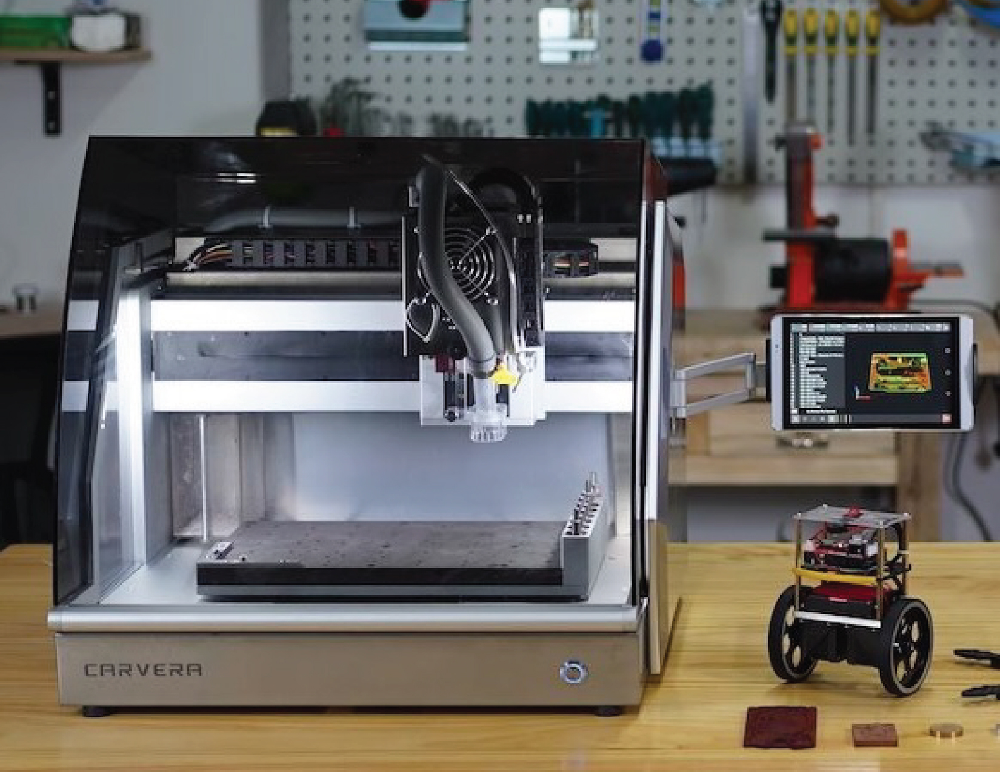
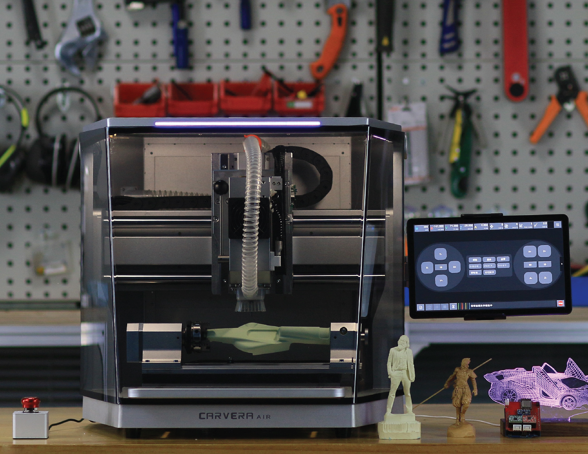

Welcome to the world of CNC! This page is dedicated to supporting users who are new to subtractive manufacturing and production techniques using desktop CNC mills like the Carvera and Carvera Air. The following tutorials and guides are designed to introduce key concepts, as well as build good practices for safety and success.
In addition to the introductory guides found on this page, more how to's and projects can be found on the Partage de connaissances page once your ready to put your skills to the test!
Getting Started with CNC Machines Introductory Video Series
| https://youtu.be/JSrFX6MYGt0 |
What are CNC Machines?In this introductory video, we define what CNC Machines are, as well as look at different types of CNC Machines and the different types of projects that can be made with them! As you choose a CNC machine, it is important to consider the types materials you want to work with, as well as the types of design files you are looking to create. CNC Mills like the Carvera and Carvera Air can work with a range of 2D and 3D design files, as well as many different materials to make limitless things with precision and repeatability. |
| https://youtu.be/dCi-giExHj4 |
What is CAM?In this introductory video, we define what CAM software is, as well as look at different types of CAD and CAM programs available and why you might choose one over the other to create something with a CNC machine! As you choose your CAM software, it is important to pick one that is not only compatible with your available resources, but also one that will support your needs and the types of projects you create. At Makera, we want our users to pick whichever CAM software they would like, but we've also noticed that few CAM programs are intuitive or as versatile as our own desktop CNC machines. Because of this, we've recently launched Makera CAM - our own CAM software solution to support our users! |
| https://youtu.be/TuH8WfL_-8s |
Safe OperationIn this introductory video, we are looking at steps and procedures to operation our CNC machines safely! CNC mills and routers like the Carvera and Carvera Air utilize a subtractive manufacturing process and offer laser engraving features which can create limitless projects, but it is crucial that we do this in a safe manner and work to reduce potential hazards. This video overviews general setup and features which allow for us to operate CNC machines in virtually any environment while also covering the basics for beginners and users who are new to CNC machines and subtractive manufacturing. |
| https://youtu.be/hccjn5_Wnwc |
Choosing BitsIn this video, we look at the different types of bits, also known as cutting tools, that you might consider for your CNC Project. Bits are what perform the cutting operations when manufacturing our projects, and choosing the correct bit to perform the type of cut we want on the material we are using is key. This video overviews the commonly used milling bits that are provided with the Carvera and Carvera Air, as well as some specialty bits for more complex projects too! In addition to this tutorial video, you can also learn more about choosing the right bit in this Instructable too.
And if you're looking for more bits to support your CNC projects, check out the bits available in the Makera Store. |
| https://youtu.be/Alj6ynbC5gY |
Speeds and FeedsThe term “Speeds and Feeds” refers to the travel and cutting speed that our CNC machines operate at while manufacturing our projects. Choosing the right speeds and feeds is vital for the success of your project, and failure to do so might damage not only your bit, but your machine as well. This introductory video overviews key terms, as well as general practices for finding success as we prepare our projects for manufacturing! In addition to this tutorial video, you can also learn more about setting the right Speeds and Feeds in this Instructable too.
You can learn more about the recommended speeds and feeds for the bits provided with the Carvera and Carvera Air on the Speeds & Feeds page of our Wiki site. |
| https://youtu.be/WUZIIvb-mHE |
Choosing StockStock is the term used to describe the material we used to manufacture our CNC projects. Versatile desktop CNC machines like the Carvera and Carvera Air can work with a wide range of materials, including woods, acrylic, composites, metals, and even printed circuit boards! As you choose the right stock for your project, there are some key considerations like choosing the right bits and speeds and feeds as well as needs for external cooling that will contribute towards the success of your project. This video also discusses the good practice for performing test cuts as we start a new project. In addition to this tutorial video, you can also learn more about choosing the right stock in this Instructable too. And if you're looking for more stock to support your CNC projects, check out the materials available in the Makera Store. |
| https://youtu.be/TuQv5upoPPg |
Securing StockAs we prepare our projects for manufacturing, a key step towards creating a safe and successful environment is to properly secure the stock to the bed of our CNC machines. Failure to do this might not only ruin the project, but could also damage your machine and create potential hazards. This introductory video overviews how to use the different types of clamps and corner brackets that are provided with the Carvera and Carvera Air, as well as covers key strategies for successful manufacturing with desktop CNC mills. |
Getting Started with our CNC Machines
Lorsque vous êtes prêt, il est temps de prendre en main votre machine CNC de bureau et de commencer à fabriquer des objets extraordinaires ! Consultez la page Partage de connaissances de notre wiki pour découvrir des projets et tutoriels. Vous trouverez également d’autres ressources sur le site officiel YouTube de Makera, ainsi que des guides étape par étape sur le site officiel Makera Instructables . Pour les ressources propres à chaque machine, consultez ci-dessous :
|
 Bien débuter avec Carvera |
 Bien débuter avec Carvera Air |
| https://youtu.be/heNXa-TAoh0 | https://youtu.be/LeEfVMmFQhY |